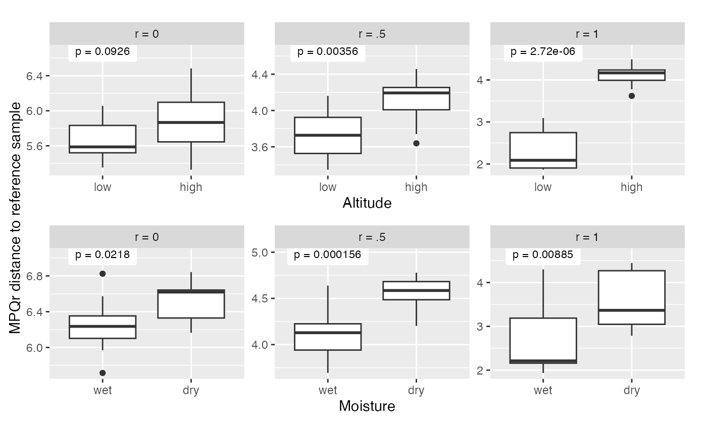
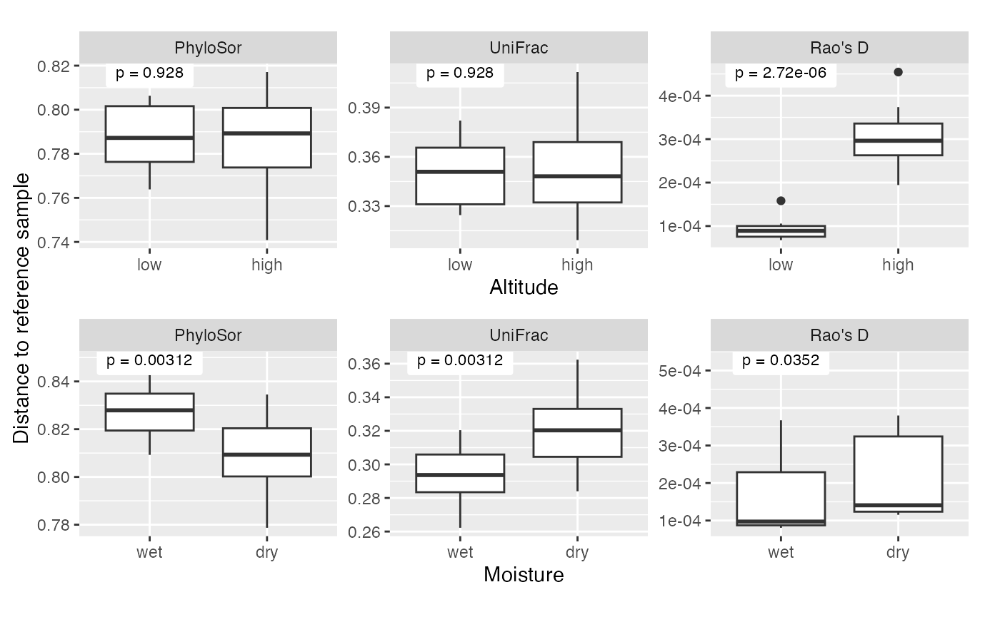

Simulation examples for MPQ distances
simulations.RmdSetup
library(ape)
library(mpqDist)
library(plotly)
library(phyloseq)
library(tidyverse)
library(viridis)
library(phangorn)
library(patchwork)
library(treeDA)
library(ggbrace)
library(vegan)
library(picante)
set.seed(0)
data(gentry)
gentry
#> phyloseq-class experiment-level object
#> otu_table() OTU Table: [ 585 taxa and 197 samples ]
#> sample_data() Sample Data: [ 197 samples by 4 sample variables ]
#> tax_table() Taxonomy Table: [ 585 taxa by 4 taxonomic ranks ]
#> phy_tree() Phylogenetic Tree: [ 585 tips and 349 internal nodes ]Two-factor simulation from the paper
In this section, we assume that there are differences between groups of samples, and we investigate whether different MPQr distances are better or worse at detecting these differences. We first make a function that crates phylogenetically anti-correlated noise based on a tree:
make_anticorrelated_noise <- function(n, tr) {
Q = vcv(tr)
p = ncol(Q)
Qeig = eigen(Q)
D = Qeig$values
D[1:(p/2)] = 0
D = D / sum(D)
D = diag(D)
E = matrix(rnorm(n * p), nrow = n, ncol = p)
E %*% sqrt(D) %*% t(Qeig$vectors)
}Next, we do the setup for the simulation. We have 300 species and 25
samples. The tree relating the species is random, and the samples are
randemly assigned to be either high- or low-altitude (alt)
and either wet or dry (precip). phy_big,
phy_small_u, and phy_small_d are clades that
are associated with altitude (phy_big) or moisture
(phy_small_u, phy_small_d).
set.seed(0)
p = 300
n = 25
tr = rtree(p)
alt = sample(c(-1, 1), n, replace = TRUE)
precip = sample(c(-1, 1), n, replace = TRUE)
phy_big = 1:p %in% Descendants(tr)[[469]]
phy_small_u = 1:p %in% Descendants(tr)[[503]]
phy_small_d = 1:p %in% Descendants(tr)[[529]]Finally, we simulate the abundances as coming from a normal
distribution with mean M plus some independent normal noise
plus some phylogenetically-anticorrelated noise. We store it as a
phyloseq object, which we use to get the MPQr distances.
M = .5 * outer(alt, phy_big) + outer(precip, phy_small_u) - outer(precip, phy_small_d)
X = M + rnorm(n = n * p, mean = 10, sd = .75) + p * .25 * make_anticorrelated_noise(n, tr)
colnames(X) = tr$tip.label
two_effect_sim = phyloseq(otu_table(X, taxa_are_rows = FALSE), phy_tree(tr), sample_data(data.frame(alt = alt, precip = precip)))
mpq_distances = get_mpq_distances(otu_table(two_effect_sim), phy_tree(two_effect_sim))For plotting the precipitation effect, we will compute the distance
between each site and a randomly-selected wet site and compare the wet
vs. the dry sites on this measure. For plotting the altitude effect, we
will computet he distance between each site and a randomly-selected low
site and compare low vs. high sites on this measure. To do so, we will
use make_animation_df with
get_avg_distances_to set. The “set” that we will be getting
average distances to will be a wet site for the precipitation effect and
a low site for the altitude effect. This will compute a range of MPQr
distances that we can use to look at both the precipitation and the
altitude effects.
## we let one of the low-altitude sites be our "reference" or "base" sample, and compute distances between each site and that site
animation_df_alt = make_animation_df(mpq_distances, get_avg_distances_to_set,
means_and_vars = NULL,
base_sample = which.min(alt),
sample_data(two_effect_sim))
animation_df_precip = make_animation_df(mpq_distances,
get_avg_distances_to_set,
means_and_vars = NULL,
base_sample = which.min(precip), sample_data(two_effect_sim))In the next block, we get the p-values for a Wilcoxon test of the
altitude and precipitaiton effect. We get a p-value corresponding to
each value of r by grouping the data frame by
frame (each unique value of frame corresponds
to a unique value of r in the MPQr distances.)
animation_df_alt = animation_df_alt |>
subset(avg_dist > 0) |>
group_by(frame) |>
mutate(p_val = wilcox.test(avg_dist ~ alt)$p.value, max_dist = max(avg_dist))
animation_df_precip = animation_df_precip |>
subset(avg_dist > 0) |>
group_by(frame) |>
mutate(p_val = wilcox.test(avg_dist ~ precip)$p.value, max_dist = max(avg_dist))Next, we do a bunch of setup for plotting. The subsetting that we do
by frame is because we only want values of r equal to 0, 1,
and .5. The remainder is setup to make the boxplots and add the p-values
to each panel. We see that the altitude effect, which is associated with
a big clade, comes through most clearly with r = 1, while the
precipitation effect, which is associated with a smaller clade, comes
through most clearly with r = .5.
math_labels <- c(
"0" = "r = 0",
"0.5" = "r = .5",
"1" = "r = 1"
)
df_alt_label = subset(animation_df_alt, (frame %in% c(0,1) | (frame >= .49 & frame <= .51)) & avg_dist > 0)[,c("frame", "max_dist", "p_val")] |> unique()
df_alt_precip = subset(animation_df_precip, (frame %in% c(0,1) | (frame >= .49 & frame <= .51)) & avg_dist > 0)[,c("frame", "max_dist", "p_val")] |> unique()
p1 = ggplot(subset(animation_df_alt, (frame %in% c(0,1) | (frame >= .49 & frame <= .51)) & avg_dist > 0)) +
geom_boxplot(aes(x = factor(alt), y = avg_dist)) +
facet_wrap(~ as.factor(frame), scales = "free_y", labeller = labeller(.default = math_labels)) +
scale_x_discrete(breaks = c(-1, 1), labels = c("low", "high")) +
xlab("Altitude") +
geom_label(aes(x = 1, y = max_dist + .2, label = paste0("p = ", signif(p_val, 3))),
size = 3, label.padding = unit(.5, "lines"), label.size = 0,
data = df_alt_label)
p2 = ggplot(subset(animation_df_precip, (frame %in% c(0,1) | (frame >= .49 & frame <= .51)) & avg_dist > 0)) +
geom_boxplot(aes(x = factor(precip), y = avg_dist)) +
facet_wrap(~ as.factor(frame), scales = "free_y", labeller = labeller(.default = math_labels)) +
scale_x_discrete(breaks = c(-1, 1), labels = c("wet", "dry")) +
xlab("Moisture") +
geom_label(aes(x = 1, y = max_dist + .2, label = paste0("p = ", signif(p_val, 3))),
size = 3, label.padding = unit(.5, "lines"), label.size = 0,
data = df_alt_precip)
h_patch <- p1 / p2 & ylab(NULL) & theme(plot.margin = margin(5.5, 5.5, 5.5, 2))
#pdf("two-factor-sim.pdf", width = 6, height = 4)
wrap_elements(h_patch) +
labs(tag = "MPQr distance to reference sample") +
theme(
plot.tag = element_text(size = rel(1), angle = 90),
plot.tag.position = "left"
)
#dev.off()The block above gave a visualization of the MPQr distances for r = 0,
.5, and 1 by altitude and by precipitation and computed p-values based
on the distances shown in the plot. However, the plot has a rather
arbitrary component which is that we plot the distance to a specific
reference site. This is not the most natural way to do a test — we don’t
want to have to condition on one reference site, we would like to test
for a difference between groups that is independent of any particular
reference site. One natural way to do this is to use PERMANOVA with the
MPQr distances. Below, we show how to do that. We use
get_mpq_distances with r = 0, .5, and 1. Then, for each of
those distances, we use the adonis2 function in
vegan to perform PERMANOVA on the altitude and
precipitation factors with each of those three r-values.
mpq_dist_list = get_mpq_distances(X, tr = tr, r = c(0, .5,1))[[1]]
adonis2(mpq_dist_list[[1]] ~ factor(alt), permutations = 9999)
#> Permutation test for adonis under reduced model
#> Permutation: free
#> Number of permutations: 9999
#>
#> adonis2(formula = mpq_dist_list[[1]] ~ factor(alt), permutations = 9999)
#> Df SumOfSqs R2 F Pr(>F)
#> Model 1 22.24 0.049 1.185 0.0749 .
#> Residual 23 431.61 0.951
#> Total 24 453.84 1.000
#> ---
#> Signif. codes: 0 '***' 0.001 '**' 0.01 '*' 0.05 '.' 0.1 ' ' 1
adonis2(mpq_dist_list[[2]] ~ factor(alt), permutations = 9999)
#> Permutation test for adonis under reduced model
#> Permutation: free
#> Number of permutations: 9999
#>
#> adonis2(formula = mpq_dist_list[[2]] ~ factor(alt), permutations = 9999)
#> Df SumOfSqs R2 F Pr(>F)
#> Model 1 18.762 0.08688 2.1884 2e-04 ***
#> Residual 23 197.193 0.91312
#> Total 24 215.955 1.00000
#> ---
#> Signif. codes: 0 '***' 0.001 '**' 0.01 '*' 0.05 '.' 0.1 ' ' 1
adonis2(mpq_dist_list[[3]] ~ factor(alt), permutations = 9999)
#> Permutation test for adonis under reduced model
#> Permutation: free
#> Number of permutations: 9999
#>
#> adonis2(formula = mpq_dist_list[[3]] ~ factor(alt), permutations = 9999)
#> Df SumOfSqs R2 F Pr(>F)
#> Model 1 69.795 0.46914 20.326 1e-04 ***
#> Residual 23 78.978 0.53086
#> Total 24 148.773 1.00000
#> ---
#> Signif. codes: 0 '***' 0.001 '**' 0.01 '*' 0.05 '.' 0.1 ' ' 1
adonis2(mpq_dist_list[[1]] ~ factor(precip), permutations = 9999)
#> Permutation test for adonis under reduced model
#> Permutation: free
#> Number of permutations: 9999
#>
#> adonis2(formula = mpq_dist_list[[1]] ~ factor(precip), permutations = 9999)
#> Df SumOfSqs R2 F Pr(>F)
#> Model 1 22.97 0.05061 1.2261 0.0453 *
#> Residual 23 430.87 0.94939
#> Total 24 453.84 1.00000
#> ---
#> Signif. codes: 0 '***' 0.001 '**' 0.01 '*' 0.05 '.' 0.1 ' ' 1
adonis2(mpq_dist_list[[2]] ~ factor(precip), permutations = 9999)
#> Permutation test for adonis under reduced model
#> Permutation: free
#> Number of permutations: 9999
#>
#> adonis2(formula = mpq_dist_list[[2]] ~ factor(precip), permutations = 9999)
#> Df SumOfSqs R2 F Pr(>F)
#> Model 1 22.581 0.10456 2.6858 1e-04 ***
#> Residual 23 193.374 0.89544
#> Total 24 215.955 1.00000
#> ---
#> Signif. codes: 0 '***' 0.001 '**' 0.01 '*' 0.05 '.' 0.1 ' ' 1
adonis2(mpq_dist_list[[3]] ~ factor(precip), permutations = 9999)
#> Permutation test for adonis under reduced model
#> Permutation: free
#> Number of permutations: 9999
#>
#> adonis2(formula = mpq_dist_list[[3]] ~ factor(precip), permutations = 9999)
#> Df SumOfSqs R2 F Pr(>F)
#> Model 1 25.745 0.17305 4.8131 0.0042 **
#> Residual 23 123.027 0.82695
#> Total 24 148.773 1.00000
#> ---
#> Signif. codes: 0 '***' 0.001 '**' 0.01 '*' 0.05 '.' 0.1 ' ' 1Other phylogenetically-informed metrics
We can do the same analysis using existing implementations of other
metrics. Here we use PhyloSor, UniFrac, and the picante
version Rao’s D. None of these can be used directly on the data we
simulated above. PhyloSor and UniFrac need sparse data, and the
picante version of Rao’s D requires an ultrametric tree. To
apply PhyloSor and UniFrac, we truncate our data matrix X, changing the
bottom 50% of values to zero. To apply Rao’s D, we use
chronos to get an ultrametric tree from the tree we used
above.
As before, we plot distances to a reference site, compute Wilcoxon p-values for the altitude and precipitation effect based on those distances, and use PERMANOVA to test for those differences in a reference-free way. The results we see are consistent with existing results in the literature showing that UniFrac and PhyloSor are more terminal measures while Rao’s D is a more basal measure.
## phylosor
X_trunc = X
X_trunc[X < quantile(X, .5)] = 0
phylosor_sim = phylosor(X_trunc, tr) |> as.matrix()
phylosor_vs_alt = data.frame(dist = phylosor_sim[which.min(alt),],
alt = alt,
measure = "PhyloSor") |>
subset(dist > 0)
phylosor_vs_precip = data.frame(dist = phylosor_sim[which.min(precip),],
precip = precip,
measure = "PhyloSor") |>
subset(dist > 0)
## raosd
ultra_tr = chronos(tr, lambda = 1)
#>
#> Setting initial dates...
#> Fitting in progress... get a first set of estimates
#> (Penalised) log-lik = -1858.803
#> Optimising rates... dates... -1858.803
#> Optimising rates... dates... -481.8091
#> Optimising rates... dates... -467.0051
#> Optimising rates... dates... -466.2074
#> Optimising rates... dates... -466.2074
#>
#> log-Lik = -458.5314
#> PHIIC = 2735.72
raod_dist = raoD(X, phy=ultra_tr)$H
raod_vs_alt = data.frame(dist = raod_dist[which.min(alt),],
alt = alt,
measure = "Rao's D") |>
subset(dist > 0)
raod_vs_precip = data.frame(dist = raod_dist[which.min(precip),],
precip = precip,
measure = "Rao's D") |>
subset(dist > 0)
## unifrac
uf_dist = UniFrac(phyloseq(otu_table(X_trunc, taxa_are_rows = FALSE), phy_tree(tr)), weighted = FALSE, normalized = TRUE, parallel = FALSE, fast = TRUE) |> as.matrix()
uf_vs_alt = data.frame(dist = uf_dist[which.min(alt),],
alt = alt,
measure = "UniFrac") |>
subset(dist > 0)
uf_vs_precip = data.frame(dist = uf_dist[which.min(precip),],
precip = precip,
measure = "UniFrac") |> subset(dist > 0)
alternate_measures_alt = rbind(phylosor_vs_alt, raod_vs_alt, uf_vs_alt) |>
mutate(measure = fct_relevel(factor(measure),
"PhyloSor",
"UniFrac",
"Rao's D")) |>
group_by(measure) |>
mutate(p_val = wilcox.test(dist ~ alt)$p.value, max_dist = max(dist))
df_2_alt_label = alternate_measures_alt[,c("p_val", "max_dist", "measure")] |> unique()
alternate_measures_precip = rbind(phylosor_vs_precip, raod_vs_precip, uf_vs_precip) |>
mutate(measure = fct_relevel(measure,
"PhyloSor",
"UniFrac",
"Rao's D")) |>
group_by(measure) |>
mutate(p_val = wilcox.test(dist ~ precip)$p.value, max_dist = max(dist))
df_2_precip_label = alternate_measures_precip[,c("p_val", "max_dist", "measure")] |> unique()
p_alternate_alt = ggplot(alternate_measures_alt) +
geom_boxplot(aes(x = factor(alt), y = dist)) +
facet_wrap(~ measure, scales = "free_y") +
scale_x_discrete(breaks = c(-1, 1), labels = c("low", "high")) +
xlab("Altitude") +
geom_label(aes(x = 1, y = max_dist, label = paste0("p = ", signif(p_val, 3))),
size = 3, label.padding = unit(.5, "lines"), label.size = 0,
data = df_2_alt_label)
p_alternate_precip = ggplot(alternate_measures_precip) +
geom_boxplot(aes(x = factor(precip), y = dist)) +
facet_wrap(~ measure, scales = "free_y") +
scale_x_discrete(breaks = c(-1, 1), labels = c("wet", "dry")) +
xlab("Moisture") +
geom_label(aes(x = 1, y = max_dist, label = paste0("p = ", signif(p_val, 3))),
size = 3, label.padding = unit(.5, "lines"), label.size = 0,
data = df_2_precip_label)
h_patch <- p_alternate_alt / p_alternate_precip & ylab(NULL) & theme(plot.margin = margin(5.5, 5.5, 5.5, 2))
#pdf("two-factor-sim-alternate-measures.pdf", width = 6, height = 4)
wrap_elements(h_patch) +
labs(tag = "Distance to reference sample") +
theme(
plot.tag = element_text(size = rel(1), angle = 90),
plot.tag.position = "left"
)
#dev.off()